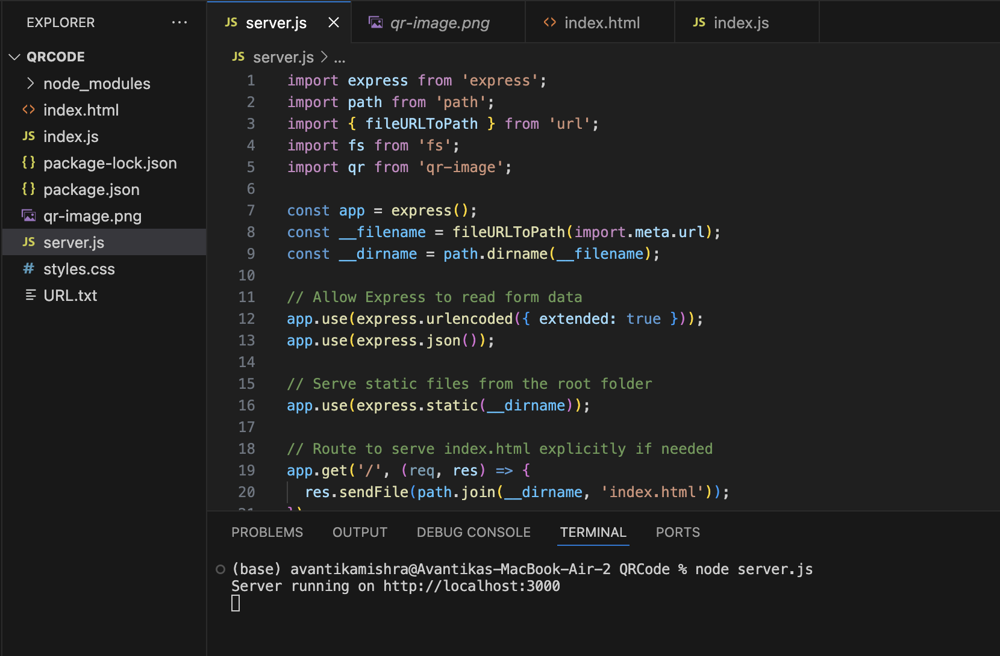
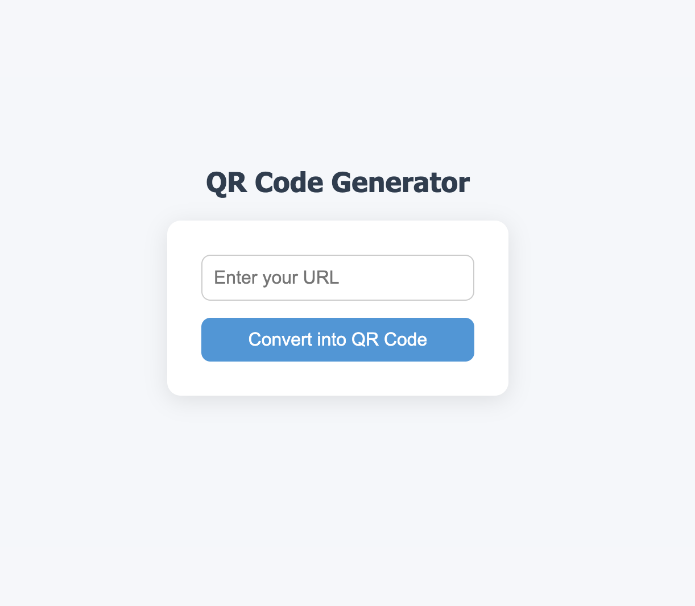
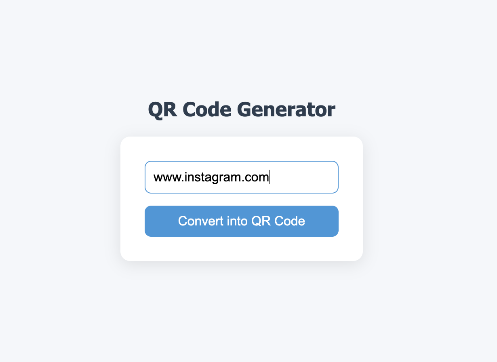
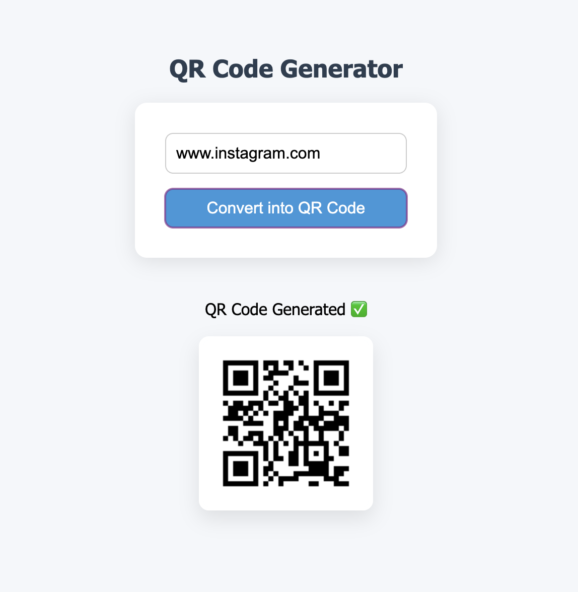
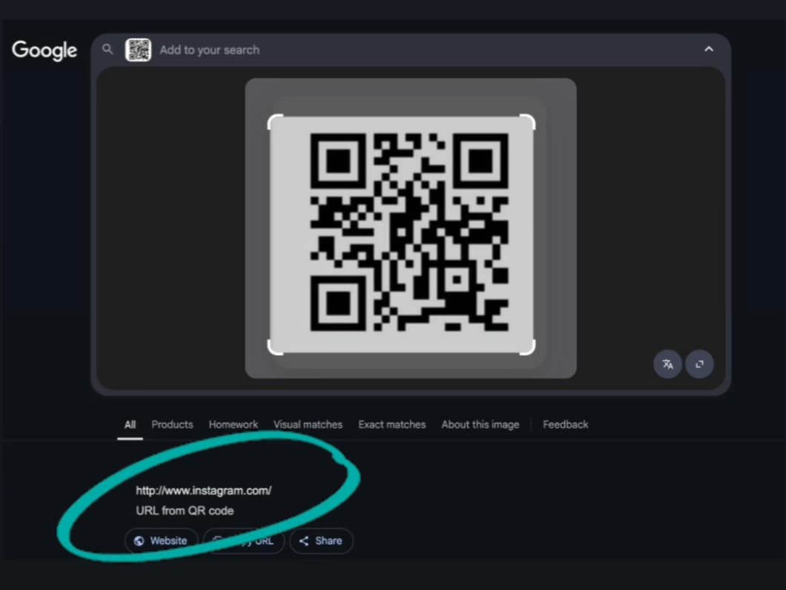

In a world of instant sharing and contactless communication, there’s a need for a fast, reliable, and customizable way to encode information. Manual sharing of URLs, contact details, or credentials is inefficient. This project aims to develop a QR Code Generator that converts user input into a scannable QR code for seamless data sharing across platforms.
The system uses QR code generation library(qrcode) to encode text, URLs, or other data into a scannable format.
Successfully generates high-resolution QR codes for any user input. Codes are scannable across devices and support alphanumeric, numeric, and special character data. Customization options such as color, size, and logo placement were added for user flexibility
📁 Project Folder Structure
🖥️ GUI Interface
📝 User entering URL
🔲 Generated QR Code
📷 Scanning the QR Code
Currently not deployed. Intended to be hosted as a web application using Flask or Streamlit Cloud. Local testing and generation of QR codes have been successfully completed. Deployment is planned for the next phase with added support for dynamic QR code generation and URL redirection.
Gained experience integrating Python libraries for real-world utility. Learned to create intuitive UIs for non-technical users
Add QR code scanning and decoding features. Support for batch QR generation (CSV input). Enable logo overlay and design themes for branding. Offer dynamic QR codes with real-time redirection capabilities